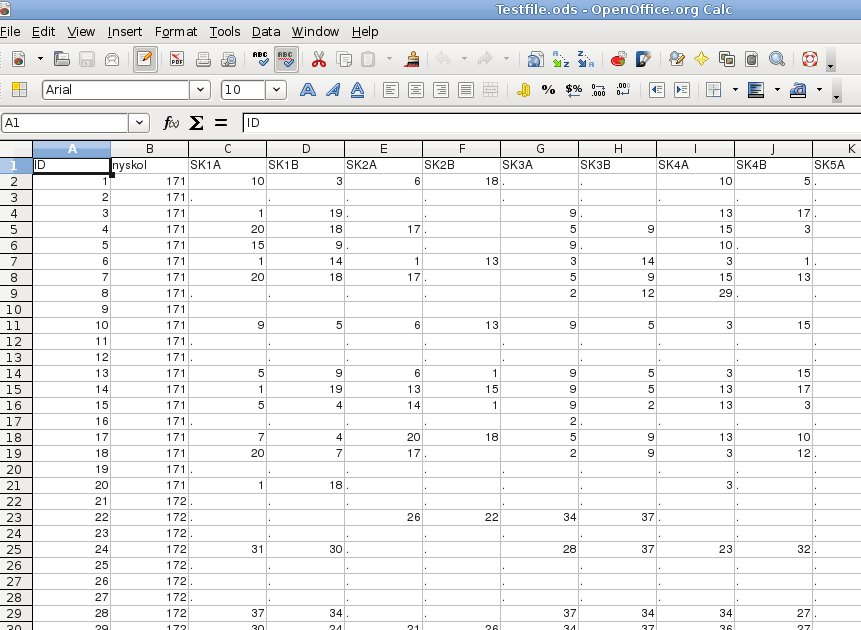

[ABOUT]
[PREREQUISITES]
[USAGE]
[DOWNLOAD]
[QUESTIONS]
About
This program parses a file consisting of survey info. It summarizes the number of times
each student in a class has been nominated while excluding self-nominations and cross class nominations.
The program also calculates percentages, averages, standard deviations and individual differences.
Program prerequisites
The file parser is written in C# using Gtk# which means some packages have to be installed on your computer
before it can be run.
Without these packages installed, the program will not run.
Program usage
Before starting the program, its input file must have the correct syntax and be in an acceptable format.
The Excel file
The excel file being used to create the input file for the program should look like this:

The First column is the student id, the second the class of the student and third column and forward
is the students answer to the question mentioned in the top row in the same column. (Ex. In the picture above,
student with id 1 in class 171 nominated student with id 10 in class 171 for question SK1A)
The first row is the header row which must contain the question names (SK1A, SK1B and so on).
The input file
For the program to be able to process this file, it must be converted from Excel-format to text format.
- If you are using Excel, choose File -> Save As and as file type select Text (Tab delimited).
- If you are using OpenOffice, choose File -> Save As and select Text CSV as file type. Make sure that no text delimiter is set.
That is, the value for text delimiter should be blank. If it is not, the program will not parse the
resulting file correctly. The Field delimiter should be set to {tab}.
When saved a text version of the Excel file will be created that can be parsed by the program.
Running the program
- Unpack the program anywhere on your computer. No installation is required.
- Start the program by double clicking its icon
- Select the text file you created earlier by clicking the Open-button.
When the file has been selected, the status bar will display the file name.
- Click the Calculate button to process the file.
- Click the View/Save-button to display the results.
- A view window will now show the results, and to save the results to a file, click the Save-button.
A popup will inform you that the file has now been saved. The saved file will be placed in the same directory
as the input file.
You can now open the results file in Excel or OpenOffice. If you are using OpenOffice, when importing set the field delimiter
to {tab} (Since this was what was set as delimiter when exporting the file, and is what the program uses as delimiter)
and the data should be imported correctly.
Download
Questions/Bugs
Send questions or bug reports to anders DOT linden AT gmail DOT com. Be sure to supply the version number of the program
which can be found by clicking the About-button in the main window.
Should you want to have the source code for the program it can also be provided.